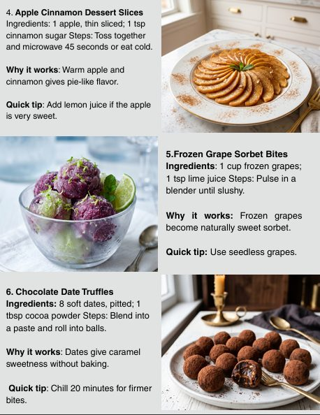
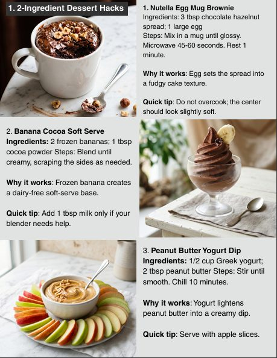
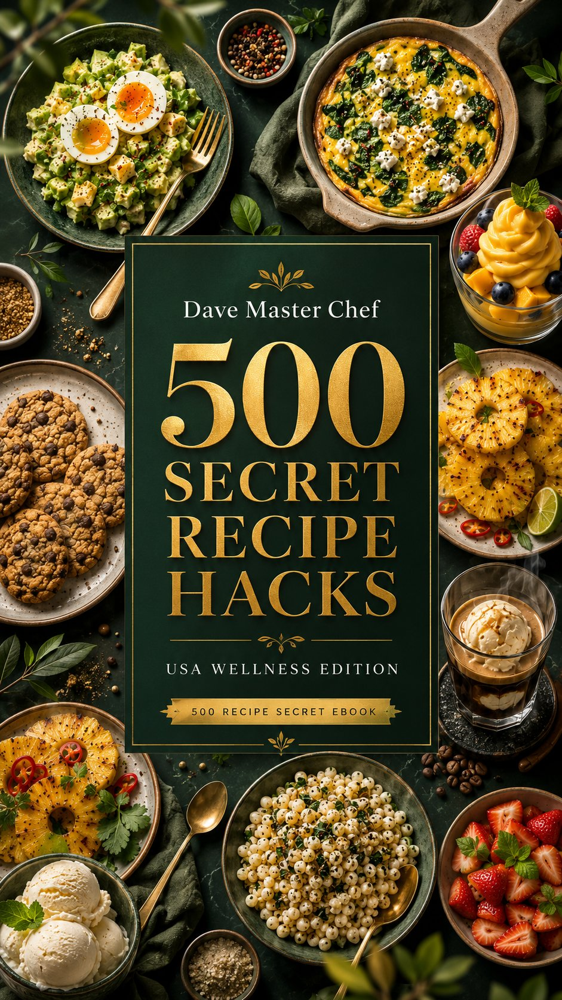

The copycat clones, 2-ingredient hacks, and kitchen shortcuts chefs don't put on the menu — filed into 25 chapters so you always know exactly where to look, by Dave, Master Chef.



The 25 chapters fall into six collections — pick the one that matches what's in your fridge tonight.
Mug brownies, no-bake bites, frozen soft-serve, and candy hacks built from two or three ingredients.
Copycat sauces and fast-food favorites rebuilt at home, plus the dips and Asian-inspired sauces that finish them.
The viral drink hacks and cafe-quality coffee recipes worth skipping the coffee shop line for.
Microwave mugs, air fryer tricks, soda in the pan, melty cheese science, and a chapter of kitchen-science bonus tricks.
Budget dinner shortcuts, party dips, Southern comfort classics, and the light snacks and breakfasts that fill the gaps.
Anti-inflammatory bowls, joint-comfort recipes, sleep-friendly snacks, heart-smart swaps, and gut-friendly basics.
Every chapter follows the same file format: ingredients, steps, why it works, and a quick tip — no fluff, no filler.
Hover a file to break the seal — ingredients, why it works, and the tip on the back.
Secure checkout. Delivered instantly as a PDF.
179 pages. 25 chapters. Every recipe filed, tested, and ready for your kitchen.